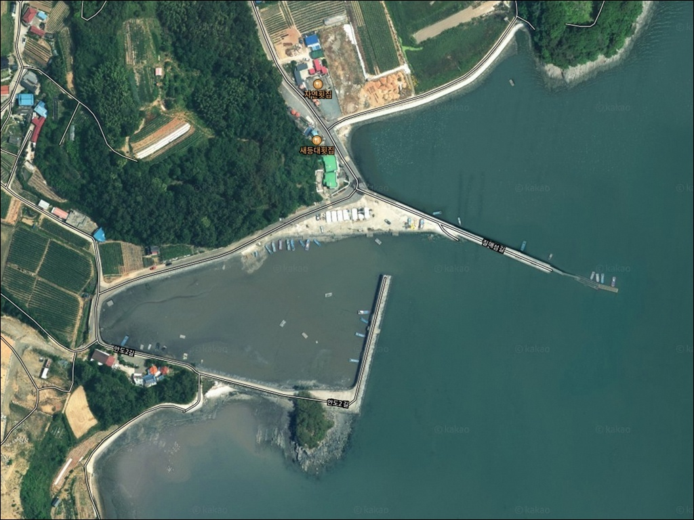
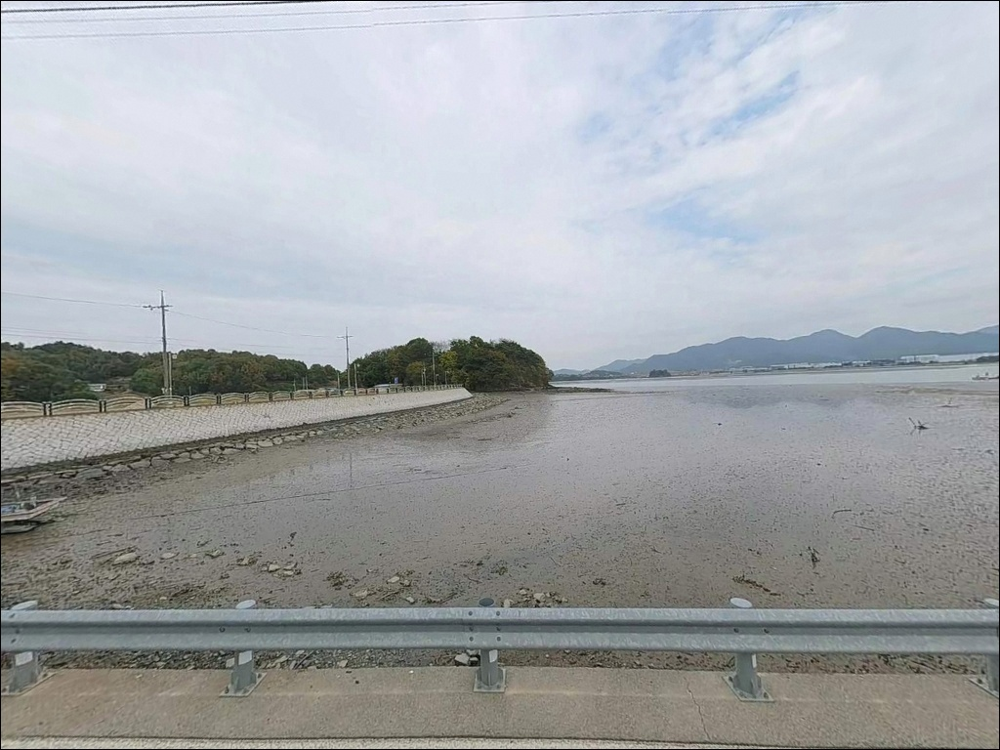
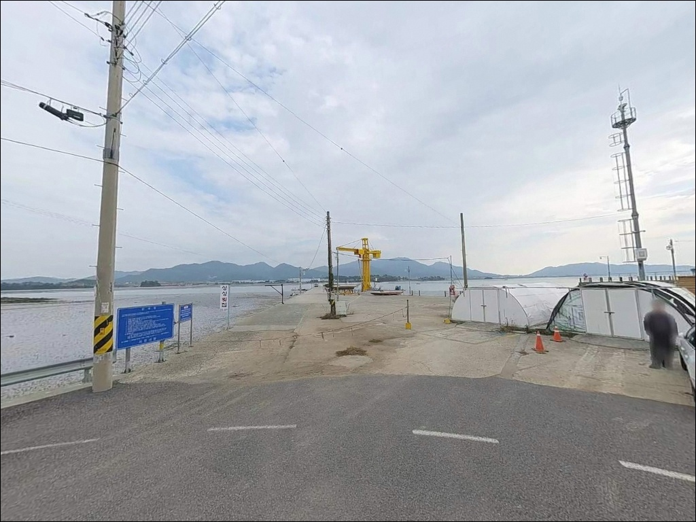
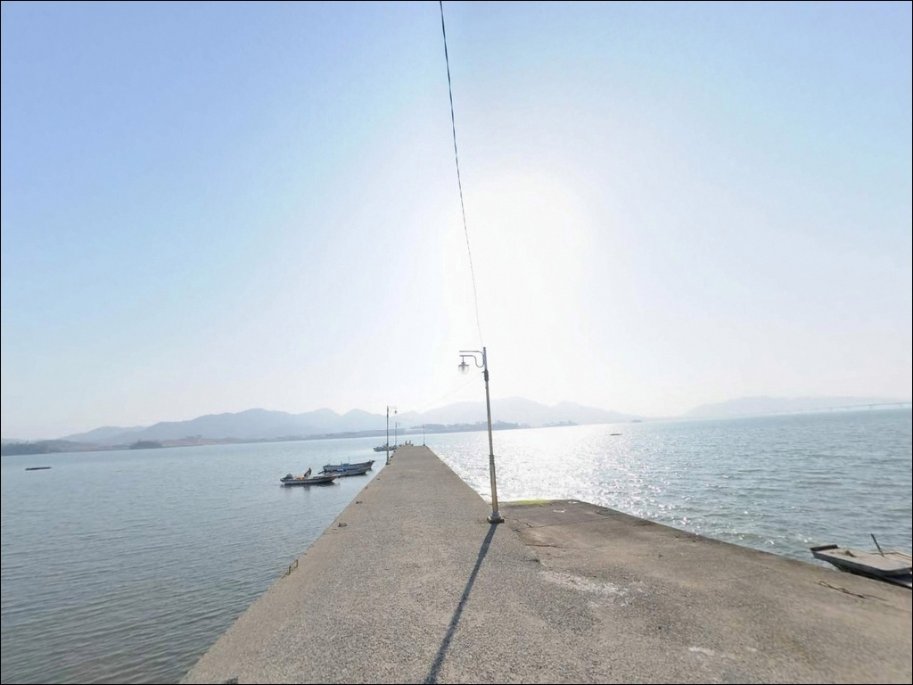
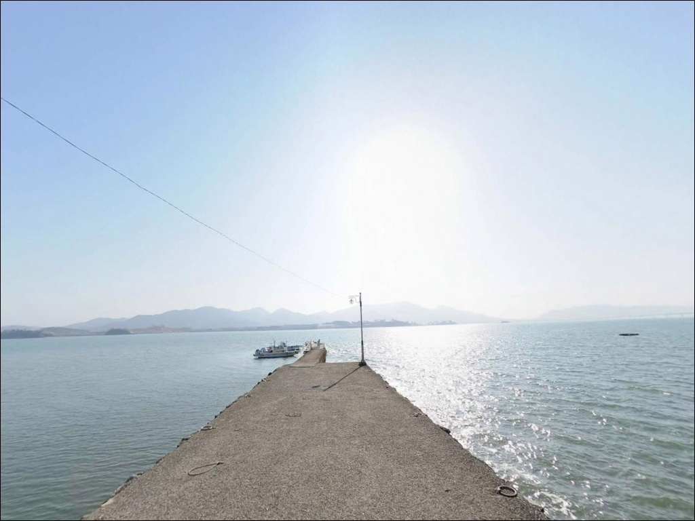
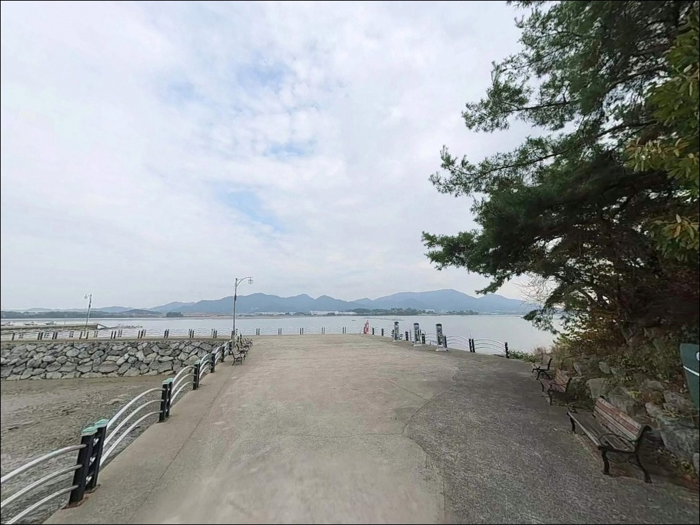
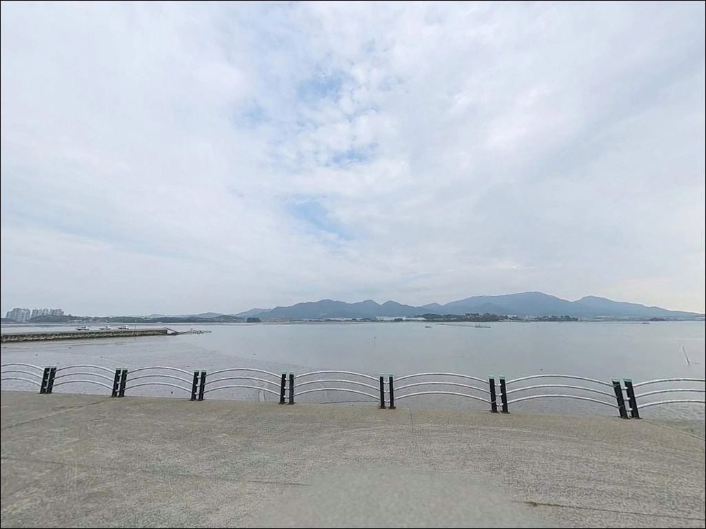
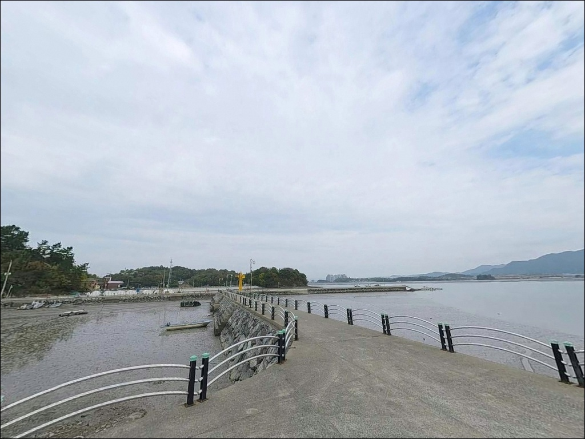
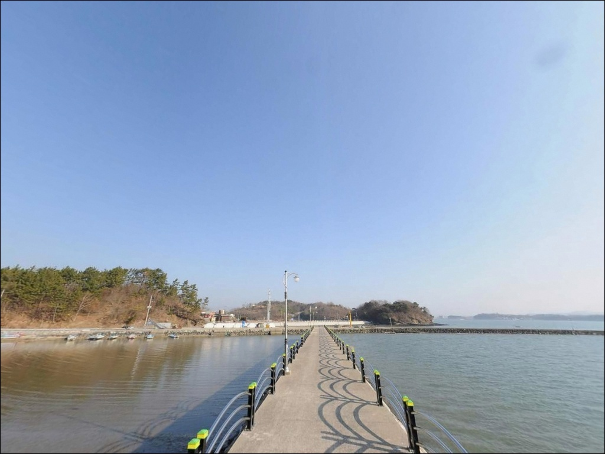

간조엔 바닥 드러나는 사천 안도항, 만조 전후 3시간에 들어오는 원투낚시 입질
이 페이지에는 광고(제휴 링크 포함)가 있으며, 광고 링크를 통해 구매하면 운영자가 판매 수익 또는 수수료를 받을 수 있습니다. 포인트 사진: 카카오맵 스카이뷰·로드뷰. 이 페이지의 지도·사진 이미지는 카카오맵의 실제 서비스 이미지와 다를 수 있습니다.


포인트 안내
안도항
경남 사천시 곤양면 중항리 214-7
만조 타이밍을 계산하지 않고
안도항을 찾으면 낚시 자리 자체가 없어집니다.
광포만 내측 뻘 지형은 간조 시
바닥이 완전히 드러나는 구조이며,
실질적인 낚시 가능 시간은 만조 전후 3시간으로
좁게 압축됩니다.
이 글은 안도항의 지형 구조,
진입 및 주차 여건, 낚시 방식별 공략 조건,
차박 체류 환경에 집중합니다.
조황 단정이나 특정 어종 보장은
이 글의 범위에 포함되지 않습니다.

1. 진입 동선과 포인트 접근성
안도항은 곤양면 중항리 해안도로를 따라
차량으로 직접 진입이 가능한 구조입니다.
도로는 포장 상태이나 폭이
약 4m 수준의 좁은 구간이 포함되어 있어
교행 시 속도를 줄이고
갓길 여건을 미리 확인하는 편이 안전합니다.
대형 SUV나 루프탑 텐트를 얹은 차량이라면
진입 전 위성지도로 마을 안길 폭을
한 번 더 살피고 출발하는 것이 좋습니다.
캠핑카나 트레일러는 진입로 폭 조건상
진입이 어렵습니다.
방파제 앞 콘크리트 평탄면에
차량 4~5대 정도 주차가 가능합니다.
선착장 옆 물량장 부지도 여건에 따라
활용할 수 있습니다.
항구 내 회차 공간은 확보되어 있어
승용차 및 일반 SUV 기준
회차에 큰 어려움은 없는 편입니다.

2. 차박 환경과 야간 체류 여건
안도항은 민가 밀집도가 낮은
소규모 어촌 마을에 인접한 포인트입니다.
야간에는 차량 통행이 적고 주변이 조용한 편이라
낚시 후 하룻밤 머무는 용도로는
나쁘지 않은 환경입니다.
마을 가로등이 항구 방향까지 기본적으로
비추는 구조이나,
방파제 끝단으로 갈수록 조명이 부족해지는 편입니다.
야간 낚시 시에는 헤드랜턴과 휴대용 랜턴을
반드시 지참해야 합니다.
주차 공간이 4~5대 수준으로 좁고
어선 출입이 있는 항구 구조상
새벽 조업 시간대에는
진입로와 접안면 공간을 비워두는 것이
기본 매너입니다.
주차 공간이 선점된 경우를 대비해
플랜B 포인트를 미리 파악해두는 편이 좋습니다.


3. 주변 편의시설 및 인프라 현황
안도항 반경 1km 이내에는
편의점이나 식당이 없습니다.
차량으로 5~10분 거리의
곤양면 소재지 방향으로 이동하면
편의점과 소규모 식당을 이용할 수 있습니다.
식수, 얼음, 낚시 소품, 연료는
출발 전에 미리 갖추고 진입하는 편이
현실적입니다.
완전 자급 체제로 진입하는 것을
기본 준비 방식으로 삼는 것이 좋습니다.
항구 내 공중화장실 설치 여부는
현장 확인이 필요한 사항입니다.
2023년 어촌 신활력 증진사업에 선정되어
정주환경 및 항구 시설 개선이 진행 중인 곳으로,
향후 편의 여건이 개선될 수 있는 포인트입니다.

4. 진입 전 반드시 챙겨야 할 준비사항
안도항 방문에서 가장 먼저 확인해야 할 것은
물때입니다.
광포만 내측 뻘 지형은 간조 시
바닥이 드러나는 구조이며,
수심이 형성되는 구간은
만조 전후 3시간으로 제한됩니다.
바다타임에서 사천만 기준 물때를 확인하고
출발 시각을 역산하는 것이 기본입니다.
뻘 지형 특성상 밑걸림 걱정은 적지만,
물이 탁한 날은 조과가 낮아지는 편입니다.
가급적 물색이 맑은 날을
출조일로 잡는 것이 유리합니다.
원투낚시 위주 포인트이므로
봉돌은 25~30호 기준의 무거운 채비를
넉넉하게 준비합니다.
소형 선착장 구조상 난간이 낮거나
없는 구간이 있을 수 있어
야간에는 이동에 각별히 주의해야 합니다.
구명조끼는 방파제 낚시에서도
반드시 착용하는 것이 원칙입니다.

5. 만조에만 열리는 포인트, 지형 기반 낚시 여건
안도항은 광포만 중앙부에 자리한
전형적인 내만형 뻘 지형입니다.
곤양천이 유입되는 기수역 환경이라
파도 영향이 거의 없고
잔잔한 수면이 유지됩니다.
방파제 212m, 선착장 162m 규모로
낚시 공간 자체는 비교적 넉넉한 편입니다.
수심은 만조 시 선착장 끝단 기준
3~5m 내외로 형성됩니다.
내항 쪽은 수심이 얕아 낚시가 어렵고,
방파제 끝단에서 정면 물골 방향으로
채비를 던져야 수심이 확보됩니다.
수심 급변 구간이 방파제 끝단과
수로 입구 방향에 형성되는 구조입니다.
조류는 조석에 따라 들고나는 흐름이 발생하며,
사리 전후에는 흐름이 빨라지는 편입니다.
조류가 흐르는 타이밍에
채비를 적절히 운용하면 조과가
올라가는 구조의 포인트입니다.
뻘물이 심한 날은 입질이 줄어드는
경향이 있어 물색 확인이 먼저입니다.
최신 조황은 방문 전에 반드시 검색해 보시기 바랍니다.


6. 포인트에 어울리는 낚시 스타일
안도항에서 가장 잘 맞는 낚시는
원투낚시입니다.
뻘 지형에서 밑걸림 없이 채비를 운용할 수 있어
장비 부담이 적습니다.
25~30호 봉돌로 물골 방향을 멀리 공략하는 방식이
이 포인트 구조에 가장 잘 맞습니다.
망둥어, 숭어, 도다리, 붕장어 계열이
이 지형에서 기대해볼 수 있는 어종입니다.
볼락 라이트게임도 야간에 노려볼 만합니다.
방파제 끝단과 선착장 경계선 주변에서
소형 지그헤드 채비를 활용하면
볼락과 우럭 계열에 대응할 수 있습니다.
야간 볼락은 방파제 조명 경계 지점을
집중적으로 탐색하는 방식이 유리합니다.
찌낚시도 방파제 외항 끝단에서
보조 방식으로 활용이 가능합니다.
조류가 약한 내만 구조이므로
예민한 찌와 가벼운 채비 위주로 운영하는 편이
이 포인트에 맞습니다.
조류가 살아 있는 만조 전후 타이밍에
집중하는 것이 효율적입니다.

7. 대안 포인트와 플랜 B 동선
안도항 주차 공간이 선점되었거나
물때 여건이 맞지 않을 때는
광포항이 첫 번째 대안입니다.
안도항에서 약 8km 거리이며,
동일한 어촌 신활력 사업 대상지로
방파제 구조가 유사하고
주차 여건이 안도항보다 넓은 편입니다.
사천대교 방향으로 이동하면
사천대교 아래 선착장이 있습니다.
수심이 더 안정적으로 확보되어
낚시 가능 시간이 물때 영향을 덜 받는 편이며,
주차와 진입 여건도
안도항보다 유리한 편입니다.
에깅이나 루어 중심의 낚시를 원한다면
사천대포항 방향으로 이동하는 편이 낫습니다.
사천만 출구 방향에 위치해
조류 흐름이 더 활발하고
수심도 깊은 구간이 형성되는 포인트입니다.

물때 한 번 맞추면
안도항이 달라 보입니다
원투낚시와 야간 볼락 라이트게임을 즐기는
낚시인이라면 안도항의 뻘 지형 조건이
나쁘지 않게 맞는 구조입니다.
밑걸림 걱정 없이 채비를 운용할 수 있고,
기수역 특성상 다양한 어종이
이 일대를 드나드는 패턴을 보입니다.
반면 물때 계산 없이 방문하거나,
간조 타이밍에 도착하면
낚시 여건 자체가 형성되지 않습니다.
만조 전후 타이밍, 자급 준비, 주차 선점 확인,
이 세 가지를 갖추고 가는 것이
이 포인트를 제대로 활용하는 방법입니다.
광포만의 조용한 뻘밭 옆에 차를 세우고
하룻밤 낚시를 즐기는 여행자라면,
가까운 곤양면에서 먹거리를 챙긴 뒤
만조 타이밍에 맞춰 입장하는 것이
이 포인트에서 낚시와 차박을
모두 챙기는 가장 현실적인 방식입니다.